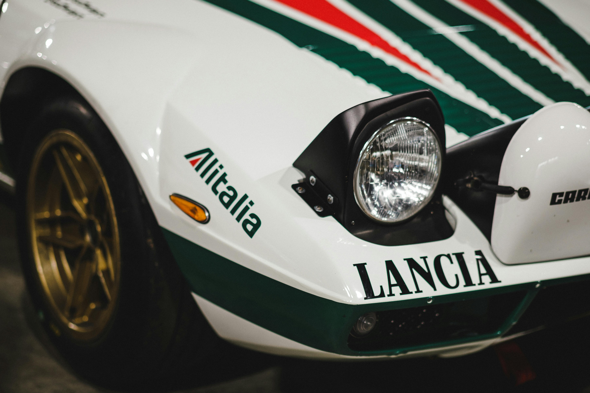
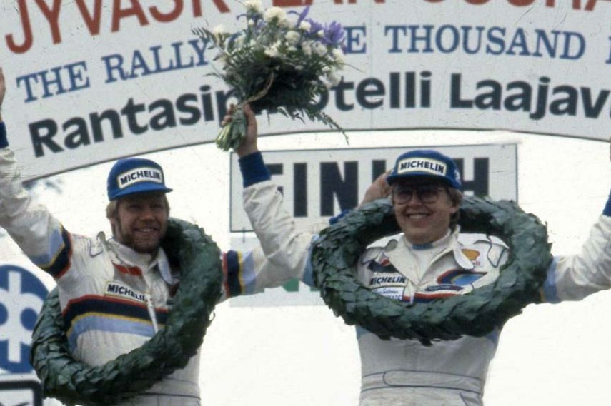

A rallysport egyik legendás korszakát jelöli. Az 1980-as évek közepén a FIA (Nemzetközi Automobil Szövetség) egy új csoportot hozott létre a rallyautók számára, ahol meglehetősen szabad szabályok voltak érvényben. Ezek a szabályok lehetővé tették a gyártóknak és a csapatoknak, hogy olyan autókat építsenek, amelyek sokszorosíthatók, és versenyképesek voltak a világbajnokságban.
A Group B autók voltak az egyik leggyorsabbak és legösszetettebbek a történelemben, olyan autókat jelentettek, mint a Ford RS200, Audi Quattro, Peugeot 205 T16, Lancia Delta S4, és sok másik. Ezek a járművek rendkívül nagy teljesítményre voltak képesek, és sok olyan technológiát alkalmaztak, amelyek addig nem voltak jellemzők a versenyautókra.
A Group B időszaka azonban veszélyesnek bizonyult. A túlzott sebesség és a technológiai fejlesztések miatt számos súlyos baleset történt, amelyek következtében többen is életüket vesztették. Ez vezetett végül ahhoz, hogy a FIA 1986-ban betiltotta a Group B autókat, mivel a versenyzők és a nézők biztonsága komoly aggodalmat okozott.
Története azonban maradandó hatással volt a rallysportra. Az autók és a versenyzők legendaivá váltak, és a korszak a rally rajongói körében továbbra is emlékezetes maradt. Az autók technológiája és innovációi továbbra is inspirációt jelentenek a mai napig, és a Group B korszakát gyakran tekintik a rallysport aranykorának.

Autók |

|
{kind=link}